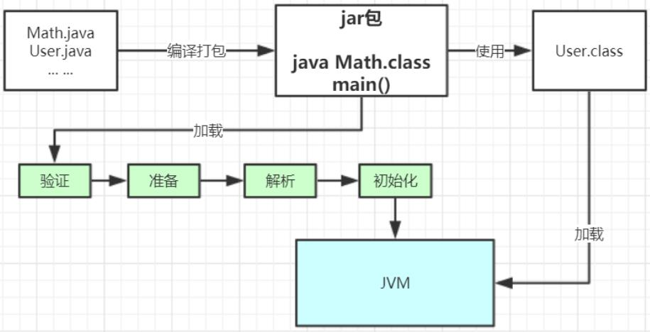
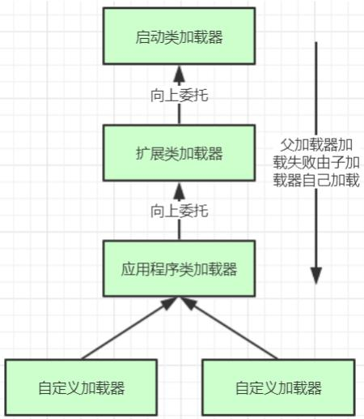

多个java文件经过编译打包生成可运行的jar包，最终由java命令运行某个主类的main函数启动程序，这里首先需要通过类加载器把主类加载到jvm。
主类在运行过程中如果使用到其他类，会逐步加载这些类。
注意，jar包里的类不是一次性全部加载的，是使用时才加载的。
从类加载到使用整个过程由如下几步：
加载、验证、准备、解析、初始化、使用、卸载
初始化：对类的静态变量初始化为指定的值，执行静态代码块。

自定义加载器：负责加载用户自定义路径下的类包；
类记载器继承了java.lang.ClassLoader类，该类有两个核心方法，loadClass和findClass。
protected Class<?> loadClass(String name, boolean resolve)
throws ClassNotFoundException
{
synchronized (getClassLoadingLock(name)) {
// First, check if the class has already been loaded
Class<?> c = findLoadedClass(name);
if (c == null) {
long t0 = System.nanoTime();
try {
if (parent != null) {
c = parent.loadClass(name, false);
} else {
c = findBootstrapClassOrNull(name);
}
} catch (ClassNotFoundException e) {
// ClassNotFoundException thrown if class not found
// from the non-null parent class loader
}
if (c == null) {
// If still not found, then invoke findClass in order
// to find the class.
long t1 = System.nanoTime();
c = findClass(name);
// this is the defining class loader; record the stats
sun.misc.PerfCounter.getParentDelegationTime().addTime(t1 - t0);
sun.misc.PerfCounter.getFindClassTime().addElapsedTimeFrom(t1);
sun.misc.PerfCounter.getFindClasses().increment();
}
}
if (resolve) {
resolveClass(c);
}
return c;
}
}findClass方法默认实现是抛出异常，所以我们在自定义类加载器主要是重写findClass方法。
protected Class<?> findClass(String name) throws ClassNotFoundException {
throw new ClassNotFoundException(name);
}jvm类加载器是有亲子层结构的.

这里类加载就是双亲委派机制，记载某个类时， 会先委托父加载器寻找目标类，找不到再委托上层父加载器加载，如果所有父加载器再自己的加载类路径下都找不到目标类，则再自己的类加载路径中查找并载入目标类。
比如：Math类，最先会找应用程序类加载器加载，应用程序加载器会先委托扩展类加载器加载，扩展类加载器再委托启动类加载器，顶层启动类加载器在自己的类加载器路径里找了半天没找到Math类，则向下退回加载Math类的请求，扩展类加载器收到回复就自己加载，在自己的类加载路径里找了半天也没找到Math类，又向下退回Math类的加载请求给应用程序类加载器，应用程序类加载器于是在自己的类加载路径中找到了Math类，于是就自己加载了。
双亲委派机制说简单就是：先找父亲加载，不行再由父亲自己加载。
还没关注我的公众号？